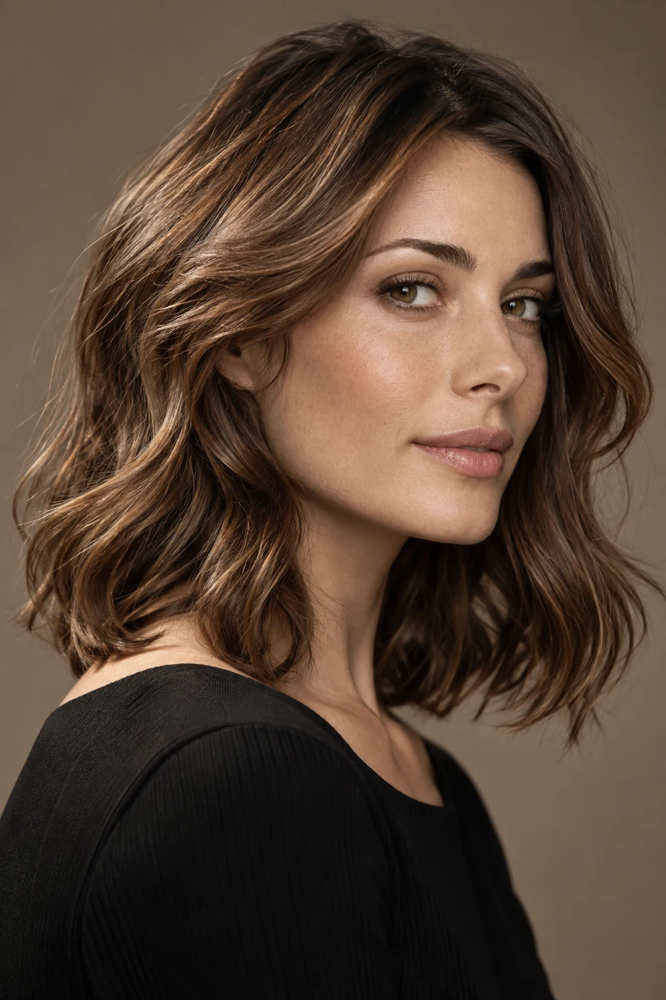
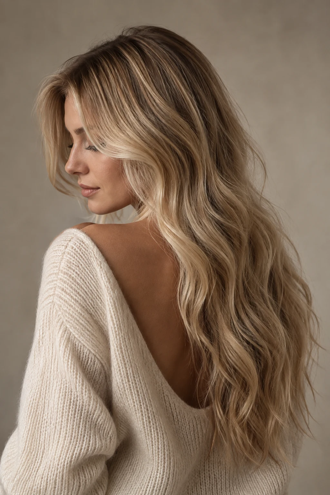
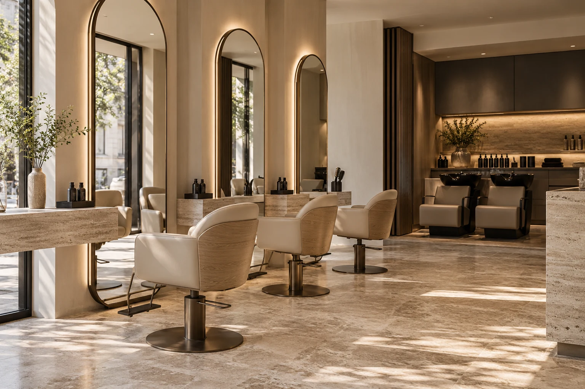

01 / NATURAL MOVEMENTSCHÖN, WENN ES SICH
NACH IHNEN ANFÜHLT.
Ihr Haar.
Ihr Stil.
Ganz Sie.
Ein Schnitt, der mitgeht.
Eine Farbe, die zu Ihnen passt.
Und Zeit für eine gute Beratung.

02 / SOFT DIMENSION01 — UNSER ANSATZ
Wir beginnen mit Zuhören.
Und mit Ihrem Haar.
Wie tragen Sie es im Alltag? Wie viel Zeit möchten Sie morgens investieren? Und was soll sich verändern?
Ein guter Look entsteht aus diesen Antworten. Aus Haarstruktur, Gewohnheiten und dem, was Ihnen gefällt. Unsere Idee von Friseurhandwerk ist persönlich, durchdacht und alltagstauglich.
02 — SCHNITT, FARBE & PFLEGE
Gut für Ihr Haar.
Klar für Sie.
Eine übersichtliche Auswahl.
Mit Zeit für das passende Ergebnis.
Beispielpreise für dieses fiktive Salon-Konzept. Aufwand und Haarlänge können den Preis beeinflussen. Bei einem echten Termin wird der Preis vor der Behandlung abgestimmt.
03 — EINE FRAGE DES GEFÜHLS
Natürlich im Ausdruck.
Präzise im Detail.
Zwei Looks als Inspiration.
KI-generierte Bildkonzepte, keine Kundenarbeiten.
„Der schönste Look?
Der, in dem Sie sich
wiedererkennen.“

RAUM FÜR EINEN MOMENT NUR FÜR SIE.04 — DAS ATELIER
Ein Platz zum Ankommen.
Und zum Verändern.
Warmes Licht, ruhige Materialien und ein freier Blick in den Spiegel. So stellen wir uns einen Salon vor, in dem das Gespräch genauso wichtig ist wie der letzte Handgriff.
ZEIT FÜR ETWAS, DAS SICH GUT ANFÜHLT.
Ein neuer Look beginnt
mit einem Gespräch.
ATELIER STRAND ist ein fiktives Beispielprojekt von LL Collective Studio.
Die Terminauswahl ist eine Demo. Es werden keine echten Termine gebucht.